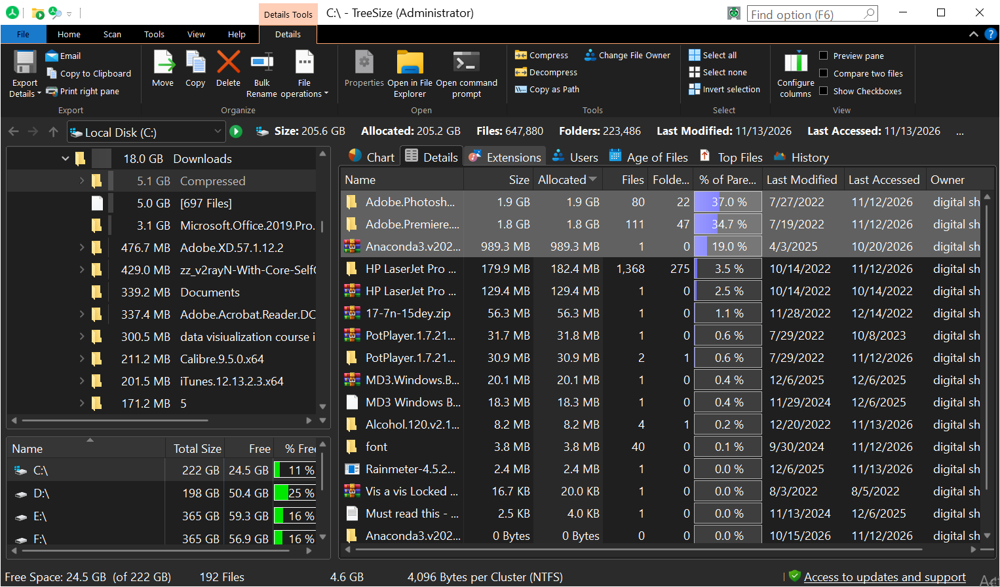

مدیریت فضای ذخیرهسازی
Storage Management — تحلیل فضای دیسک با TreeSize و پیشنهاد راهکارهای آزادسازی فضا.
01 / هدف مأموریت
هدف این پروژه، بررسی نحوه استفاده از فضای دیسک با ابزار TreeSize، شناسایی بزرگترین پوشهها و فایلها و پیدا کردن دادههای غیرضروری است. هدف عملیاتی پروژه، آزادسازی حداقل ۵ گیگابایت فضا بدون آسیب به فایلهای مهم کاربر و فایلهای سیستمی است. همچنین یاد میگیریم چگونه قبل از حذف، اهمیت و ریسک هر فایل را ارزیابی کنیم.
02 / ابزارها و محیط اجرا
TreeSize (نسخه Free): نمایش درختی اندازه پوشهها و فایلها، مرتبسازی بر اساس حجم، و نمایش بزرگترین فایلها و توزیع انواع فایل.
Disk Cleanup / Storage Settings: ابزارهای داخلی ویندوز برای پاکسازی امن فایلهای موقت، کش بهروزرسانی و سطل بازیافت.
محیط اجرا: سیستمعامل Windows ۱۰/۱۱ ، اجرای TreeSize با دسترسی Administrator برای اسکن کامل درایو C: و درایوهای داده.
03 / مراحل اجرا
- ثبت وضعیت اولیه: قبل از هر کاری، فضای آزاد و فضای مصرفشده درایو C: را در This PC یا Storage Settings یادداشت و از آن اسکرینشات میگیریم تا مقایسه قبل و بعد ممکن شود.
- نصب و اجرای TreeSize: برنامه را نصب میکنیم و با گزینه Run as administrator اجرا میکنیم تا به همه پوشهها دسترسی داشته باشد.
- اسکن درایو: درایو C: را انتخاب و اسکن میکنیم. در نمای درختی، ستون Size را مرتبسازی میکنیم تا پرحجمترین پوشهها در بالا قرار بگیرند.
- بررسی عمیقتر: وارد پوشههای پرحجم مانند Users، Downloads، AppData\Local\Temp و Windows\SoftwareDistribution میشویم و از تبهای Largest Files و File Types برای یافتن فایلهای بزرگ و انواع پرحجم (مثل ISO، ZIP، MP4) استفاده میکنیم.
- دستهبندی ریسک: هر مورد را در یکی از سه دسته قرار میدهیم: امن برای حذف (فایل موقت، کش، سطل بازیافت)، نیازمند بررسی (فایلهای دانلودشده، ویدیوها) و دست نزنیم (فایلهای سیستمی و برنامههای نصبشده).
- پاکسازی: فایلهای موقت و کش را با Disk Cleanup و Storage Settings پاک میکنیم، نصبکنندهها و فایلهای بیاستفاده را بررسی و حذف میکنیم و سپس سطل بازیافت را خالی میکنیم. برنامههای بیاستفاده را از Apps & Features حذف میکنیم.
- اسکن مجدد و مقایسه: TreeSize را دوباره اجرا میکنیم و فضای آزاد جدید را با وضعیت اولیه مقایسه میکنیم تا رسیدن به هدف ۵ گیگابایت تأیید شود.
04 / یافتهها و تحلیل فنی
| منبع فضای اشغالشده | حجم آزادشده | سطح ریسک حذف |
|---|---|---|
| فایلهای موقت (Temp) | 1.5 GB | کم |
| کش بهروزرسانی ویندوز | 1.9 GB | کم (از طریق Disk Cleanup) |
| نصبکنندههای قدیمی در Downloads | 1.7 GB | متوسط (نیازمند بررسی) |
| سطل بازیافت | 12.5 GB | کم |
| کش مرورگر | 2 GB | کم |
| ویدیو و ISO بیاستفاده | 0.9 GB | متوسط (نیازمند بررسی) |
| جمع کل | 20.5 GB | هدف ۵ گیگابایت محقق شد |
- بیشترین حجم غیرضروری معمولاً در پوشههای Downloads، Temp و کشها جمع میشود، نه در فایلهای اصلی برنامهها.
- نمای درختی TreeSize نشان میدهد که تعداد کمی از پوشهها بخش بزرگی از فضا را اشغال میکنند؛ بنابراین بررسی چند پوشه پرحجم مؤثرتر از حذف تصادفی فایلهای کوچک است.
- تب File Types نشان میدهد که فایلهای ISO، ZIP و ویدیو معمولاً بیشترین سهم را در فایلهای کاربر دارند.
- پاکسازی کش بهروزرسانی ویندوز از طریق ابزار داخلی ویندوز انجام میشود، نه حذف دستی پوشه سیستمی، تا خطر آسیب به سیستم کم شود.
- فایلهای حذفشده تا زمان خالی کردن سطل بازیافت فضا را آزاد نمیکنند، بنابراین این مرحله برای محاسبه فضای نهایی ضروری است.
05 / مشکلات و راهحلها
| مشکل | راهحل پیشنهادی |
|---|---|
| اسکن ناقص یا نمایش Access Denied برای برخی پوشهها | اجرای TreeSize با دسترسی Administrator |
| ترس از حذف فایل مهم یا سیستمی | حذف فقط موارد دسته «امن»، ابتدا انتقال به سطل بازیافت و دست نزدن به پوشه Windows و Program Files |
| فایلهای Temp که در حال استفاده هستند و حذف نمیشوند | بستن برنامهها، رد کردن فایلهای در حال استفاده یا ریستارت سیستم و تکرار پاکسازی |
| فضای آزاد پس از حذف تغییر نکرد | خالی کردن سطل بازیافت و اسکن مجدد |
| نیاز به فایلهای بزرگ حذفشده در آینده | انتقال فایلهای مهم و بزرگ به فلش، هارد اکسترنال یا فضای ابری بهجای حذف قطعی |
06 / مستندات تصویری




07 / جمعبندی و آموختهها
در این پروژه یاد گرفتم که برای مدیریت فضای ذخیرهسازی، ابتدا باید «دید» که فضا کجا مصرف میشود و بعد تصمیم به حذف گرفت. TreeSize با نمایش درختی و مرتبسازی بر اساس حجم، این کار را سریع و دقیق میکند و نشان میدهد که چند پوشه پرحجم بیشترین سهم را دارند.
همچنین آموختم که حذف باید بر اساس ریسک انجام شود: فایلهای موقت و کش امناند، فایلهای کاربر نیازمند بررسیاند و فایلهای سیستمی نباید دستی حذف شوند. گرفتن وضعیت قبل و بعد، ثبت مستندات تصویری و تهیه نسخه پشتیبان از فایلهای مهم، از عادتهای حرفهای در کار پشتیبانی IT است که این پروژه به من آموخت.